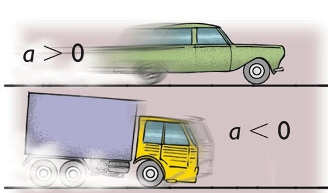

MRUV - Movimiento rectilineo uniformemente variado
El Movimiento Rectilíneo Uniformemente Variado (MRUV) es un tipo de movimiento en el que un
objeto se desplaza en línea recta y cambia su velocidad de manera constante. En otras palabras,
en un MRUV,
un objeto acelera o desacelera de forma uniforme a medida que se mueve en línea recta.
La clave para entender el MRUV está en dos conceptos importantes:
- Aceleración constante: En un MRUV, la velocidad del objeto cambia en la misma cantidad en cada unidad de tiempo. Esto significa que la aceleración es constante durante todo el movimiento.
- Velocidad inicial y final: El objeto en un MRUV tiene una velocidad inicial (la velocidad con la que comenzó su movimiento) y una velocidad final (la velocidad en un momento posterior). Estas velocidades pueden ser diferentes debido a la aceleración constante.
El MRUV es un tipo de movimiento en línea recta en el que la velocidad del objeto cambia de manera uniforme debido a una aceleración constante. Este concepto es fundamental en la física y se aplica a una amplia gama de situaciones, desde automóviles acelerando en carreteras hasta objetos en caída libre bajo la influencia de la gravedad.
